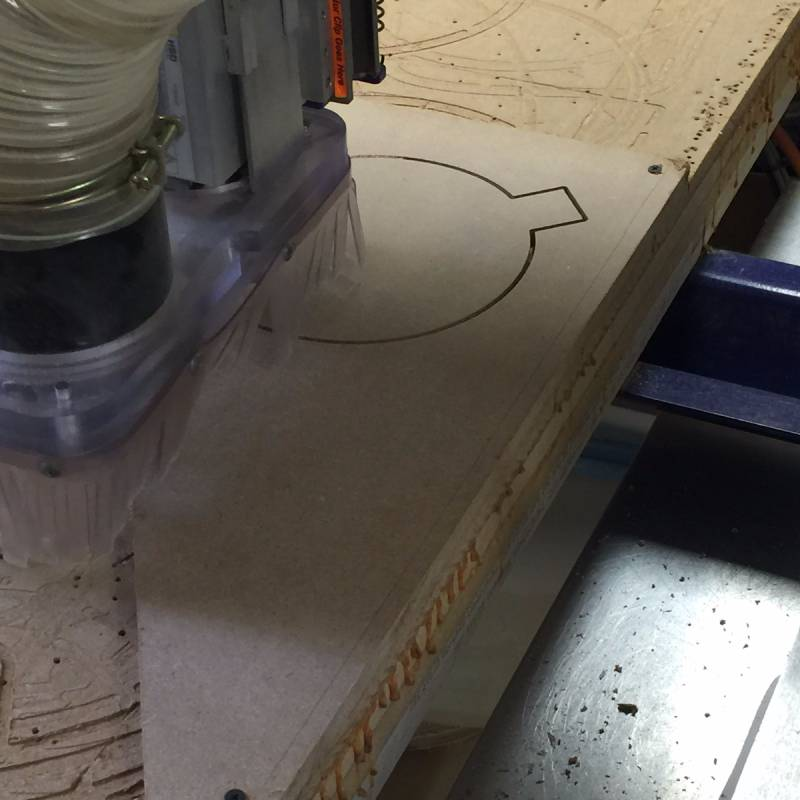
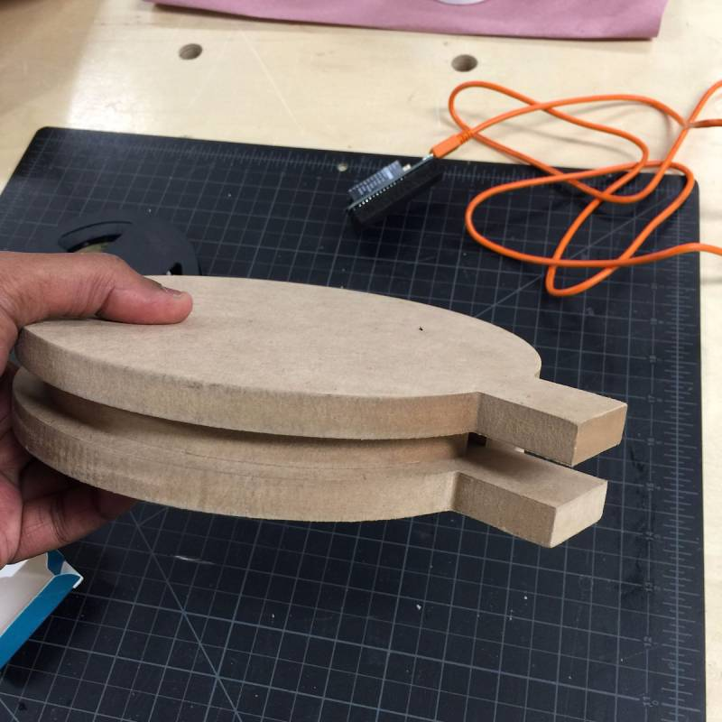

For our finals, we decided to take on a real world challenge — TraQ — an online bus tracker and ticketing system for the SVA Shuttle. The idea came about our personal experience of trying to use the shuttle. Although a schedule was pasted across all 15 campuses of SVA, the shuttle wasn’t always on time. Since the shuttle is free, we tried using it to visit points of interest that were on its route. Due to the uncertainty of the schedule and the location of the shuttle, most students avoided using it.
With TraQ, our intention was not only to increase the ridership of the SVA Shuttle, but only make the experience of taking the shuttle as smooth as possible.
We took the SVA shuttle bus to get the actual data by using the mobile app ‘Strava’. Once we had the sample data, we plotted the GPS coordinates on P5 front-end to ensure that we don’t have any errors.

With a data collection program loaded onto the Particle Photon, tethered to a mobile connection, we walked around a city block to ensure that we’re getting the right GPS data. We used P5 and Mappa.js (mapping framework) to plot this data.
The next challenge was connectivity as the Photon board had to be connected to Wifi to transmit the coordinates. We found that the citywide free Wi-Fi service, LinkNYC was very good in terms of coverage and the strength. We used iStumbler on the Mac to test the Wifi reception and strength across different points in the route. Since this was a captive portal (requiring a sign-in) and Photon wasn’t capable of signing in, we had to build a hack where the photon would internally analyze the code on the page and automatically fill the name and click on the sign-in button.
We wanted the product to represent the TraQ brand but as well function as a duality between a tracking system and an elegant desk tool. So we decide using the “Q” in TraQ. We create a simple Q design on Illustrator that will contain MKR 1000 and Particle Photon and prepare our files for the CnC in the VFL lab.
 For the MKR 1000 as the scanner, we build three components of the big “Q” top and the bottom section where MKR can have enough room to fit inside and a midsection to hold in place so there won’t be any movement inside. With the particle photon, the mini “Q” had top and the bottom section carved out as well to fitted both photon and foam core. The material was MDF wood composite material we obtained.
Interactive Tickets